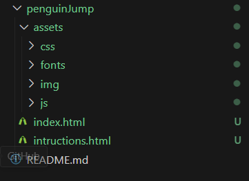
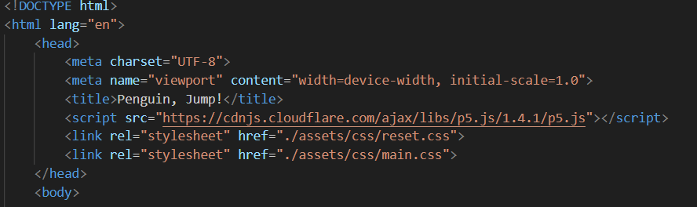
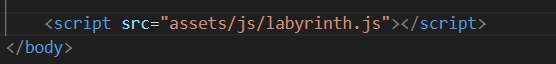
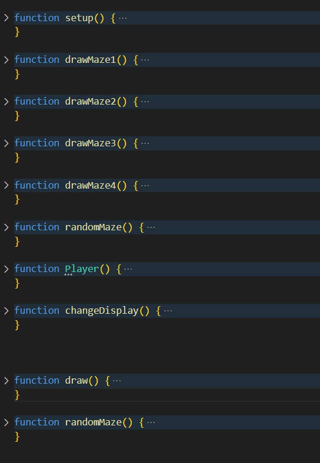
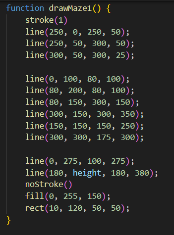
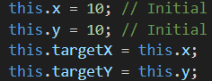
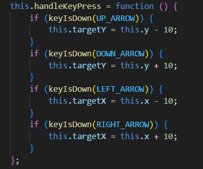
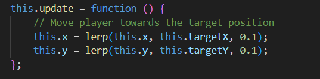
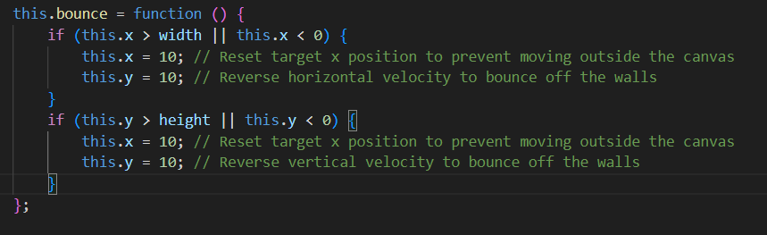
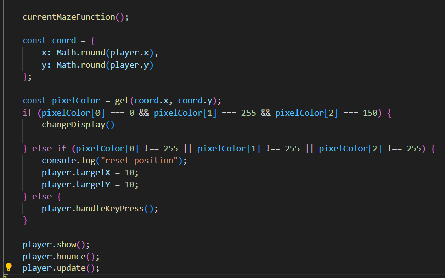

instructies van Penguin Jump
Volg de stappen om zelf het spel te kunnen bouwen
Stap 1: Basis bestanden opstellen
Maak een nieuwe map aan en noem deze PenguinJump. Maak vervolgens een index.html bestand aan. Ook maak je in de PenguinJump map een andere map assets aan, in deze assets folder maak je dan nog eens een folder css, en js toe, zo kun je goed overzicht houden van je documenten. in css folder maak je een main.css bedand aan en in de js map maak je een labyrinth.js bestand aan. Dit zou er als volgt moeten uitzien:
De font, en de foto's krijg je van ons.
Open je index.html bestand en druk de volgende tekens in: ! + tab. Dit zal een basis HTML structuur voor je aanmaken. In de head sectie van je HTML bestand voeg je de volgende regels toe:  Dit zorgt ervoor dat je CSS bestanden worden geladen.
Voeg ook het script toe aan je HTML bestand. Dit zorgt ervoor dat je p5.js library wordt geladen.
Voor het Javascript bestand zelf toe te voegen, begeef je u naar het einde van de body sectie van je HTML bestand en voeg je 
Stap 2: HTML bestand opstellen
In de index.html maak je een < main >< /main > hier in schrijf je zelf de tekst die nodig is aan de hand van h1, h2, en p waarbij een h1 voor de hoofdtitel staat, een h2 voor eventuele ondertitel en een p voor de tekst. dit doe je op deze manier: < h1 >titel< /h1 >. < h2 >ondertitel< /h2 >.
Stap 3: functies maken
We beginnen met een aantal functies te maken in het labyrith.js. Deze zullen we later invullen. Eerst en vooral maken we een setup function setup() {} deze spreken we eenmaal aan om het canvas te bepalen, de kleur, de achtergrond enzovoort. We maken ook een functie voor de penguin te tonen, bewegen, updaten, en te resetten dit doen we door function Player(){}. Ook maken we een functie die word aangeroepen wanneer de penguin het doolhof heeft gemaakt, deze noemen we changeDisplay. We zorgen er voor dat de doolhoven willekeurig worden getoont dit doen we door een functie randomMaze te maken. Als laatste maken we een draw functie die blijft actief zolang het spel duurt en bevat dingen zoals het checken of de penguin uit het doolhof is geraakt, of de penguin tegen een muur is gebotst enzovoort.
Stap 4: Variabelen
Soms willen we een waarde opslaan om later te gebruiken. Dit doen we door een variabele te maken.
Een variabele is een container waarin we een waarde kunnen opslaan. Dit doen we door "let" te schrijven gevolgd door de naam van de variabele en een waarde. Dit ziet er zo uit: "let x = 200;". Dit zorgt ervoor dat we een variabele x hebben met de waarde 200.
Voor een variabele die niet veranderd schrijven we "const" in plaats van "let". Dit ziet er zo uit: "const y = 200;". Dit zorgt ervoor dat we een variabele y hebben met de waarde 200 die niet veranderd.
Bij dit spel maken de grootte van onze canvas variabel dus schrijven we "let height, en let width, deze geven we beide de waarde 400.
begeef je nu naar de setup functie, hier willen we onze canvas opstellen. Dit doen we door "createCanvas(width, height);" te schrijven. Dit zorgt ervoor dat we een canvas van 400 bij 400 pixels krijgen.
Stap 5: Het labyrinth tekenen
Eerst maken we een funtie aan voor elke maze dat we willen gebruiken. We starten met de eerste maze. Dit doen we door "function drawMaze1() {}" te schrijven. In deze functie willen we een labyrinth tekenen.
Dit doen we aan de hand van lijnen die we op ons canvas tekenen. Een lijn heeft 4 waarden nodig. De x en y positie van het begin van de lijn en de x en y positie van het einde van de lijn. Dit ziet er zo uit: "line(0, 0, 400, 400);". Dit zorgt ervoor dat we een lijn tekenen van de linkerbovenhoek naar de rechteronderhoekhoek van ons canvas.
Voor dit spel hebben we de labyrinths gemaakt door altijd een lijn te tekenen die eventueel verder gaat op het laatste punt van de vorige lijn. Op deze manier kan je zoveel lijnen op je canvas zetten als je wenst.
Dit zou er dan zo kunnen uitzien:
Herhaal deze stap voor elke maze die je wilt gebruiken.
Gevordered zouden een labyrinth kunnen tekenen aan de hand van for loops maar dat is voor nu te complex.
Stap 6: Penguin tekenen
Nu onze labyrinths getekend zijn, willen we een penguin tekenen. hiervoor geven we eerst een aantal waarden mee die we in de player functie schrijven, deze hebben we later nodig voor de beweging van de penguin

De this.x en this.y staan voor de start positie van de penguin zelf.
de waarden "this.targetX = 10" en "this.targetY = 10" staan voor de positie waar de penguin naartoe moet. Dit zorgt ervoor dat we een variabele targetX en targetY hebben die specifiek zijn voor de speler. Deze stellen we nu gelijk aan de vorige variabelen. Dus "this.targetX = this.x;" en "this.targetY = this.y; dit zorgt er voor dat we weten van waar tot waar de penguin moet bewegen."
we maken in de player functie ook een show functie deze ziet er zo uit: "this.show = function() {}". De penguin wordt aan de hand van een ellipse gemaakt. Een ellipse heeft 4 waarden nodig. De x en y positie van het midden van de ellipse wat dus this.x en this.y zijn, de breedte en de hoogte van de ellipse. Dit ziet er zo uit: "ellipse(this.x, this.y, 20, 20);".
De penguin staat momenteel nog niet op de pagina. Dit doen we door in de show functie, de penguin te tekenen en laten zien. Geef een kleur aan de penguin door de tag "fill(0);" te schrijven. Dit zorgt ervoor dat de penguin wit is. We doen dit voor het tekenen van de vorm omdat het eerst een kleur verwacht. Indien er geen kleur wordt gespecifieerd word de laatste kleur die ingesteld werd gebruikt.
Je zal zien dat er niets op de pagina verschijnt. Dit komt omdat we de show functie nog niet hebben aangeroepen. Dit doen we door de show functie aan te roepen in de draw functie. In deze functie roepen we de show functie aan door "player.show();" te schrijven.
Stap 7: Bewegen van de penguin
Het bewegen doen we via de pijltjes toetsen. Hierbij wordt weer een nieuwe funtie aangemaakt ook in de player functie genaamd handleKeyPress. Deze functie doet niets zolang er geen pijltjes worden ingezet. De functie monitort of er een pijltjestoets wordt ingedrukt. dit zou er als volgt moeten uitzien: 
de positie van de penguin verandert wanneer je de pijltjetoets indrukt, deze verandering moet worde geupdate, hierbij schrijven we een update functie die this.update noemt moeten de waardes altijd geupdate worden. Dus schrijf een nieuwe functie genaamd this.update. Deze zou er als volgt moeten uitzien:
Zorg er ook voor de de update en de handleKeyPress functies worden aangeroepen in de draw functie.
Stap 8: zijkanten van het canvas
Als je nu probeert te bewegen zal je zien dat de penguin van het canvas af kan. Dit is niet de bedoeling. Om er voor te zorgen dat dit niet gebeurt moeten we een if statement toevoegen die checkt of de penguin binnen het canvas is, hierbij controleren we of de this.x en this.y waardes binnen het canvas zijn. we schrijven dit in de player function, Dit ziet er zo uit:

Zorg er ook voor dat de bounce functie wordt aangeroepen in de draw functie. Dit ziet er zo uit:
player.bounce();
Stap 9: De maze aanraken
Momenteel kan je je begeven naar de uitgang van het labyrint zonder dat er iets gebeurt als je de muren aanraakt. Om dit te voorkomen moeten we een if statement toevoegen die checkt of de penguin het doolhof aanraakt, hierbij controleren we of the postitie waar het midden van de penguin zich bevindt gelijk is aan de kleur zwart. Is dit zo dan moet de penguin terug naar het begin van het labyrint. Dit doen je als volgt:

Deze wordt in de draw functie zelf geplaatst omdat we willen dat dit continu wordt gecheckt.
Stap 10: Het spel voltooien
Als je nu de uitgang van het labyrinth aanraakt zal er niets gebeuren. Om het spel te voltooien moeten we de functie "changeDisplay" invullen, deze feliciteert de speler wanneer het doolhof voltooid is. . In deze functie veranderen we de display van de pagina zodat er een bericht verschijnt dat de speler het labyrint heeft voltooid. Dit ziet er zo uit:
const completedBox = document.querySelector(".completed-box");
completedBox.classList.remove("completed-box--hidden");